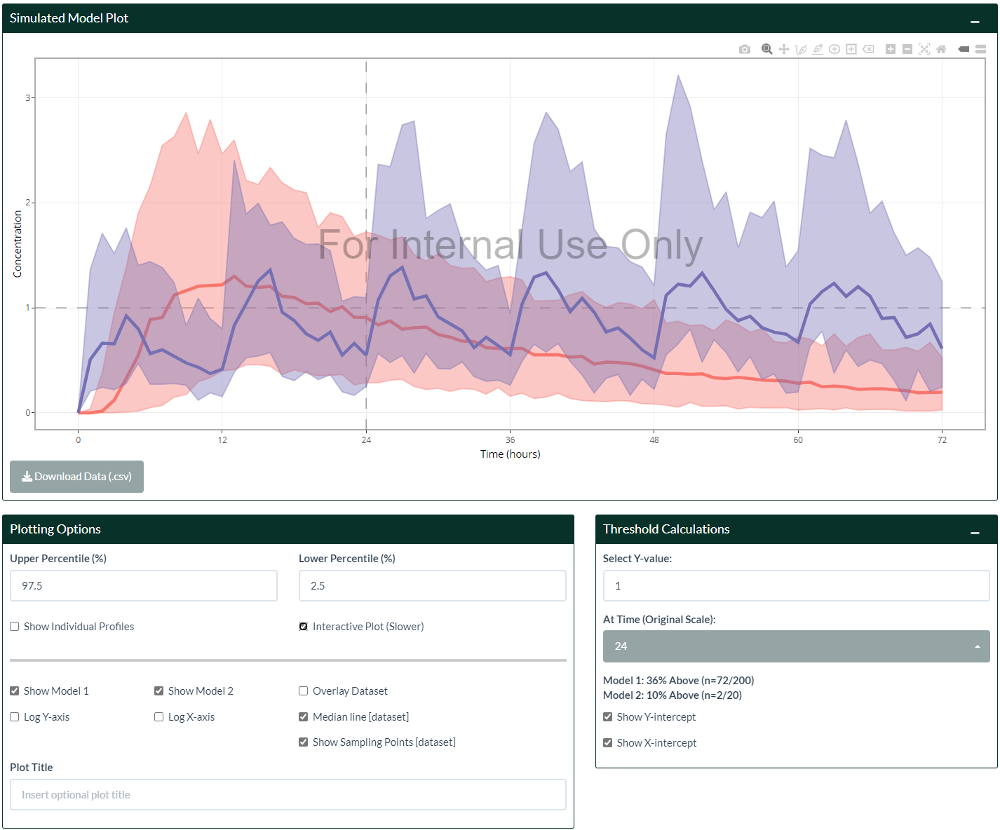

MVPapp is an R package that bundles the Model Visualization Platform (MVP) Shiny application for local use and/or deployment. MVP is an interactive pharmacometrics environment requiring minimal setup from the users, and is developed with user-friendliness as a top priority so even non-modelers may be able to explore different aspects of the models without too much hassle, whilst balancing complexity for advanced users. Some features include:
- Live code editing using mrgsolve
- Flexible dosing regimens, supporting up to 5 independent dosing schedules per model
- Basic data exploration and data cleaning, and overlaying of data
- Quick NCA output and reporting
- Model comparison to visualize differences
- Parameter sensitivity analysis to easily evaluate impact of changing parameters
- Automatic PK/PD metrics using a user-defined time range
- Variability assessment using external databases such as the NHANES, WHO, and CDC virtual patients
- Custom covariate distributions to further assess variability
The goal of MVP is to support initial model development and facilitate internal discussions more efficiently.
Installation
MVPapp is not currently on CRAN. Install it via devtools:
## Install devtools first if required
# install.packages(devtools)
devtools::install_github("Boehringer-Ingelheim/MVPapp", build_vignettes = TRUE)Once installed, launch MVP using the following commands:
Getting Started
Simulations without Variability
This is the default landing page when the App is launched. It looks a bit empty at the moment, however it is very simple to start generating a model and show a plot. All important settings are neatly situated together on the same page so the user can appreciate in real-time whenever they change certain aspects of the model. This page should be the homepage as other pages of the app inherit settings from this page (e.g. dosing and axis choices).

- Navigate to the “Select Model 1” box on the left hand side and choose a template model from the drop-down list, or upload your own .cpp file.
- Once a model is selected or uploaded, you can make further changes in the Code Editor below.
- You may also copy across your own model code by selecting the “Blank Template” model. Note that when you switch models, all changes are lost.
- Note that the entire model code is a string that is assigned to the
model_codeobject, and initialized asmodel_object. Therefore, if the model code contains quotation marks, the user will have to remove those manually (or escape them using the forward slash,\) to avoid compilation errors.
- Once a model is selected or uploaded, you can make further changes in the Code Editor below.
- Click on the
Generate Model 1button. If the model compiles, the “Parameter Values” box will be populated, and a plot will show up on the right hand side.- If the model fails to compile, check the “Model Info (Console)” box for the error message.
- Note that all sources of variability are ignored on this page (
zero_re()frommrgsolveis applied). Navigate to the Variability Page if you want to assess variability in populations (see section below).
- If the model fails to compile, check the “Model Info (Console)” box for the error message.
- Dosing is handled on the right hand side above the plot. Each tab contains independent dosing schedules that will be combined together. The “Transform Dose” tab contains more options that are self-explanatory. The “Model Duration/Rate” tab provides options to handle modeling duration or rate, which are done automatically by default.
- Plotting options are on the right hand side below the plot. Most of the options are self-explanatory, and the ones that require clarification have a pop-up tooltip when you click on the input selection. Once a dataset has been uploaded from the “Data Input” page, it can be overlaid on top of the simulations (see section below).
- Sampling times are configured on the right hand side below the plot in the “Simulation Options” tab. A custom sampling schedule can be defined (make sure to also check the “Use Custom Sampling Times” checkbox).
- A second Model can be generated by repeating steps 1-5 by navigating to the “Model 2” tab on the top left. The models are completely separate in every aspect, making visual comparisons in dosing regimens or model structures extremely easy.
- By default, the dosing regimens for Model 2 is collapsed for appearance. Click on the “+” icon on the right hand side to expand it.

- In general, most plots are interactive (using the
plotlypackage), which allows zooming, panning, drawing etc, controlled from the top right of the plot. The camera icon downloads the current plot, based on the options set by the “Download Options” box on the bottom right of the page.

Uploading Datasets and Data Exploration
Uploading NONMEM-formatted datasets (.csv) and tab-delimited text files (.txt) is supported in the “Data Input” page. Some default cleaning options are applied automatically from the “Built-in Dataset Cleaning Options” box. Further filtering and cleaning may be applied in the code editor on the left hand side. The dataset should have the “ID”, “TIME”, and “DV” columns to be fully supported by the rest of the app (e.g. data overlay). At minimum, only the “ID” column is required to support Data Exploration in the Data Input page. If missing, the user may create / rename these columns using the code editor.
- The filtered dataset (i.e. after passing through the code editor) is shown on the right hand side table.
- Summary statistics of the data per ID is shown on the second sub tab on the top right hand side.
- Descriptive statistics (NCA) can be derived (supporting non-NONMEM datasets) by defining the options and then clicking the “Calculate NCA” button, from the “Descriptive Statistics” tab. Note that this feature is experimental and assumes a single dose per subject only for a single compartment. The user may need to filter their dataset accordingly. The displayed table can be transposed if required. Results and plots per subject can be downloaded by the buttons at the bottom of the page.

- Quick data exploration are provided by the “General Plot”, “Ind. Plot”, and “Corr. Plot” tabs (tip: clicking on the legend can toggle each subgroup on/off when the plot is interactive):
General plots are flexible plots that can handle continuous/continuous, continuous/discrete, and discrete/discrete types of data. Settings from General Plots will be carried over to the “Ind. Plot”, where users can explore individual profiles in more detail.

Correlation plots are grouped by ID and are useful to explore potential correlations between covariates.

Note: once a dataset is uploaded, its display can be toggled on other pages by checking the “Overlay Dataset” checkbox in the “Plotting Options” in each respective page!

Parameter Sensitivity Analysis
After a model has been generated from the Simulation page, the impact of perturbing parameter values can be assessed in the Parameter Sensitivity Analysis. MVP makes this transition seamless by carrying across previously defined model settings and making them available (i.e. in $PARAM) for selection.
- Select a parameter of interest from the top left drop-down list.
- Adjust parameter values immediately below. By default, MVP provides 3 profiles (±50% of the original value, and the original value itself). The user may further adjust the values manually as they see fit.
- Changes are immediately shown on the plot on the right, and PK/PD metrics are provided on the left page under each respective sub tab.
- If you have a PK/PD model, you may need to switch the Y-axis from the Simulation page to display PD information, assuming your default Y-axis is PK concentration.
- The rounding of the metrics can be changed in the “Rounding Options” sub tab.
- If you have a PK/PD model, you may need to switch the Y-axis from the Simulation page to display PD information, assuming your default Y-axis is PK concentration.
- The time interval to derive metrics can be adjusted in the “Select Time Interval for Deriving Metrics” box, below the plot.
- Note that the original time scale is always used (if the user has changed scaling by using the “Scale X-axis (Divide by)” option from the Simulation page).
- Note that the original time scale is always used (if the user has changed scaling by using the “Scale X-axis (Divide by)” option from the Simulation page).
- Plotting and Download Options are similar to those in the Simulation page.
- Simulations of the middle profile, in addition to its derived metrics can be downloaded in the Table page.

Simulations with Variability
What makes MVP truly a joy to use is its ease in answering typical questions such as:
- What are the predicted PK exposures in pediatrics?
- What are the predicted PK exposures within a certain weight range?
- What are the predicted PK exposures in patients with moderate to severe renal impairment (or any other covariate where having a distribution is desired)?
- What is the likelihood of maintaining PD response above a certain threshold?
- …or a combination of the above questions together!
All of these questions can be handled in MVP in seconds, massively reducing turnaround time from team discussions (or even doing this live)!
Defining Population (Covariates)
- External patient databases (NHANES, CDC, WHO) can be configured in the “Demographics” box on the top left. Select a relevant database from the drop-down list, or use “None” to only change the number of subjects being simulated.
- If the model code contains any of
AGE,WT,HT,BMI, orBSAin its$PARAMsection, its value will be replaced by the subjects’ value from the sampled database.
- Sampled demographics can be downloaded in the “Summary Statistics” sub-tab if the user wants to use this to perform their own simulations.
- Histogram of weight and age can be viewed in the “Plots” sub-tab.
- If the model code contains any of

- Custom covariate distributions can be defined (e.g.
EGFR) and inserted similarly together with the database shown in step 1). Up to 3 unique covariate distributions are enabled.- Normal, Log-normal, uniform, binary categorical distributions are supported.
- Once defined, they will be made available in the “Summary Statistics” sub tab and able to be downloaded.
- Normal, Log-normal, uniform, binary categorical distributions are supported.

Assessing Variability
Both OMEGAs and SIGMAs, if it exists in the model, will be available for the user to adjust on the bottom left hand side of the page. Once ready, click the “Update Model” button to generate new simulations.
- There are built-in checks to ensure matrices are positive semi-definite and non-negative, however the user should make sure that values are sensible. The “Matrix Info” box below should match the matrices - if not, that means the inputted matrices were invalid and the matrices has reverted to its last known state.
- A plot with variability should appear on the right after “Update Model” has been pressed (note: any time the matrices are changed, the user needs to click the “Update Model” for it to take effect).
- The display can be changed to either show percentile range or individual profiles in the “Plotting Options”.
- Percentage of subjects above a certain value can be calculated in the “Threshold Calculations” box on the right.
- By default, the last time is used. However this can be changed using the “At Time (Original Scale)” option.

Extended Features
Providing external models and changing default settings
Please see the article on Supplying Passworded Models, or access the vignette on this topic in R (vignette("supply-passwords", package = "MVPapp") for instructions on how to provide external models on App start-up.